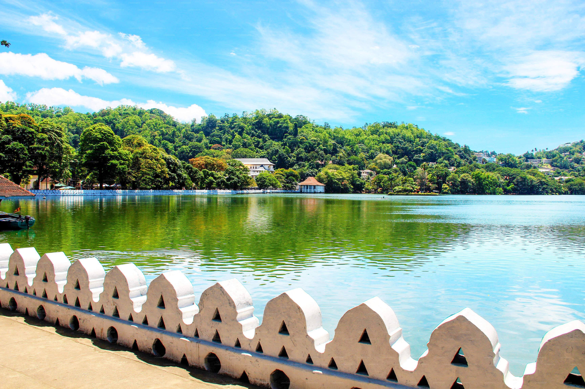

Key Attractions

The Temple of the Sacred Tooth Relic — a Buddhist treasure.

Kandy Lake — peaceful walks with scenic views.
Royal Botanical Gardens — home to orchids and exotic trees.
The Temple of the Sacred Tooth Relic — a Buddhist treasure.
Kandy Lake — peaceful walks with scenic views.
Royal Botanical Gardens — home to orchids and exotic trees.
December to April is the most pleasant season with mild weather.